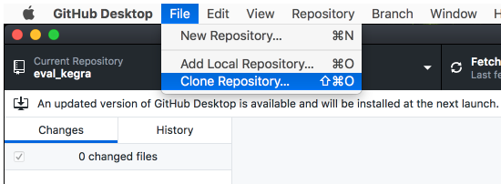
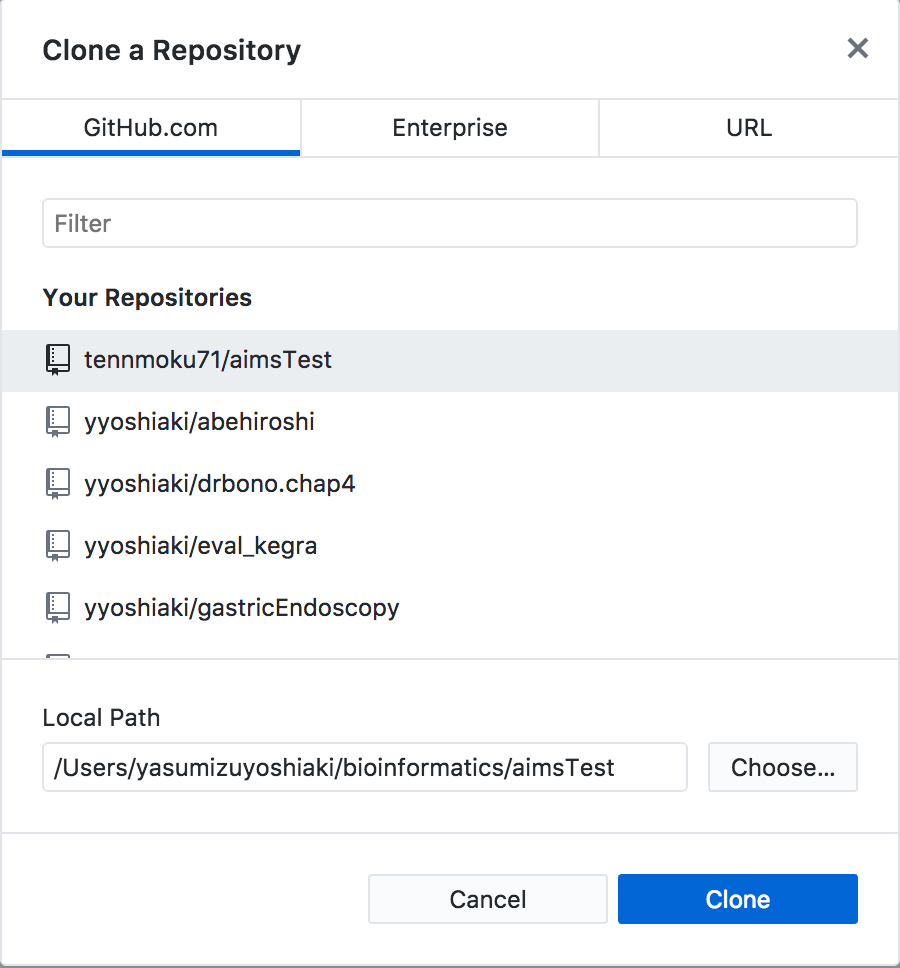
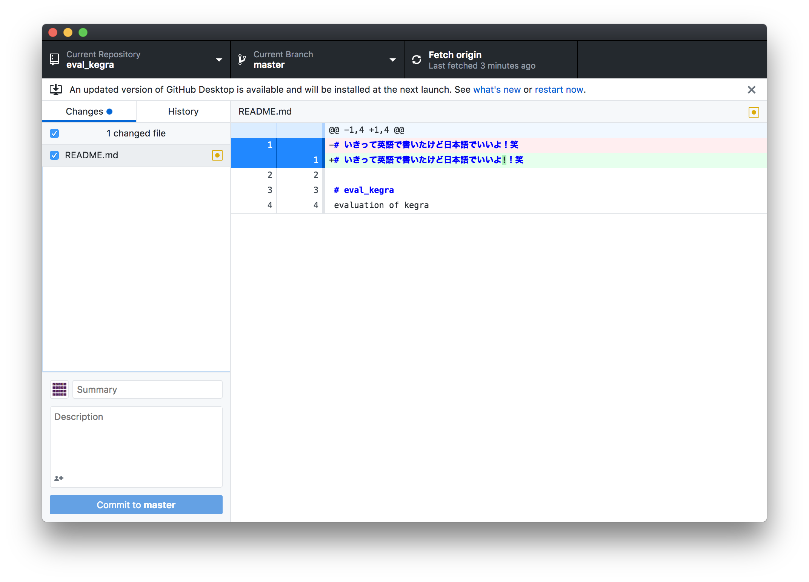
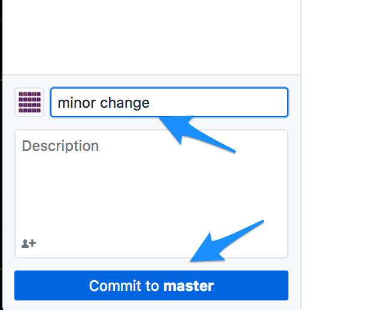

GitHub desktopアプリの使い方
Posted by 安水 in Tech_archive
Contents
githubとはなにかの説明は省略しています。githubについて知らない人は先にいろいろ調べてみましょう。今回はgithub desktopについてです。
レポジトリの読み込み（プロジェクト開始時の一回のみ。）

github上のレポジトリとLocal pathを指定。

これでうまくcloneされていたらOK
毎回の流れ(基本編)
一日の作業の初めにFetchしてきて、最新の状態に同期する。

ファイルを変更、加筆すると自動的にアプリに反映される

作業の区切りがついたら左下のSummeryに適当にコメントを付け、commit to master。 コメントはもうちょっと丁寧に付けましょう。。。

pushして変更を反映させる。

まとめると、fetch(pull) -> commit -> push のライフライクルです。
CLIでの操作
デスクトップアプリはwin,macではあるが、Ubuntuでは無いらしいので、同じ作業をCLIでやる必要がある。ただし、基本は同じで
$ git pull origin master
$ git add --all
$ git commit -m "コメント"
$ git push origin master
って感じでやればOK。branchやmerge、プルリクエストについては触れていません。